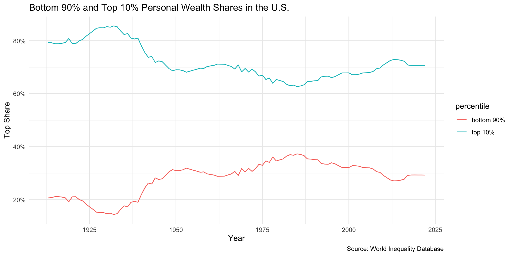

Lecture 12.2
Globalization
Inequality
Illustrative statistics from Stiglitz
- 20% of wage earners earn as much as bottom 80%
- Top 1% earn in a week what bottom 20% earns in a year
- Top .1% earn in a day what bottom 90% earns in a year
- Walton family controls as much wealth as is owned by bottom 30% of society (~$238 billion)
Common Inequality Measures
- Income/wealth shares -What share a given subpopulation accounts for
- Ratios
- 20/20 ratio (highest 20/lowest 20)
- Palma ratio (highest 10/lowest 40)
- 90/10 ratio (lowest 90/highest 10)
- Gini coefficient
- Based on the “Lorenz” curve
- Varies from 0 to 1
- Others
- e.g. Thiel, Hoover
Lorenze Curve and Gini Coefficient
- Gini coefficient is A/(A+B)
- Varies from 0 (perfect equality) and 1 (perfect inequality)

Income vs. Wealth Inequality
- Income: what people earn from work and returns from investments like stocks, bonds and investment properties
- Wealth: value of everything a person or family owns minus any debts
- Net worth: marketable assets minus debts
- Financial wealth: non-home wealth
Wealth Inequality
The Problem of the 1%
Decomposing the 1%
Top 1% as a whole see increased wealth shares of about 15% from 1975 to now, while top .5% doubles its wealth share; .1% and .01% tripple their wealth shares.
Income Inequality
United States Gini Coefficient
United States Median Household Income

United States Average Incomes
Exercise
- Go to wid.world
- Country graphs section
- Select a country
- Canada
- United Kingdom
- Germany
- France
- Sweden
- China
- India
- How have pre-tax income shares changed over time?
- How does your country compare to the world and the U.S. in terms of shares of top 10%
Explanations
Pickety vs. Stiglitz
- Pickety: r > g
- There is some truth to “r > g” in the U.S.
- Most people do not have a lot of non-home wealth
- But upward slope of inequality sharper in U.S.
- There is some truth to “r > g” in the U.S.
- Stiglitz: “rent seeking”
- CEOs pay themselves rather than paying workers
- Rent is drawing income by capturing something
- As opposed to producing something of value
- Grabbing wealth vs. creating wealth
Other Explanations
- Economic globalization
- Trade
- Internationalization of finance
- Conservative economic policy (Regan revolution)
- Removal of capital controls
- Deregulation
- Shifts in tax policy
- Technology and skill development
- Reduced demand for low-skilled workers
- Immigration
- Social norms and reward system
- Decline of left parties and unions
- Lack of redistribution
Debate: Should Big Tech be Broken Up
- Pick one of the FAANG companies
- Facebook (Meta)
- Amazon
- Apple
- Netflix
- Google (Alphabet)
- Should it be broken up into smaller companies?
- Winners and losers
- Relate your argument to inequality/Stiglitz